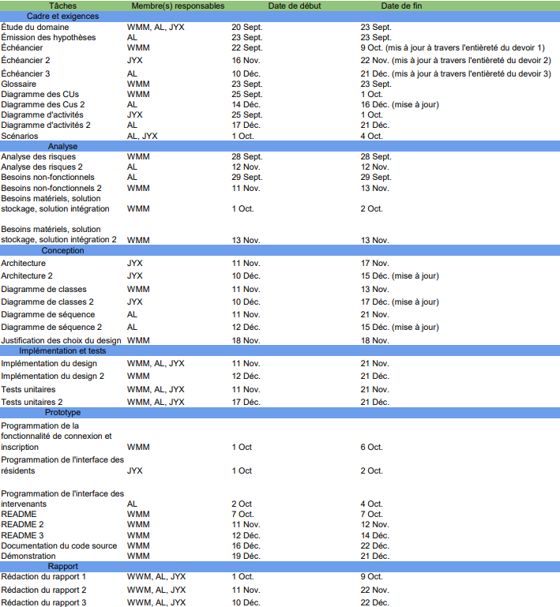

Cadre du projet
Introduction
...
Échéancier

Cas d'utilisation
Notes à propos du diagramme
- choix des acteurs
- choix des relations
Diagramme de classes
Diagramme d'activités
Titre du diagramme 1

Titre du diagramme 2

Titre du diagramme 2

Analyse
Risques (mise à jour)
- Inexactitude des données : Si les informations sur les travaux et entraves sont désuettes, cela pourrait amener les utilisateurs à planifier leurs déplacements de manière incorrecte, en plus de causer de la frustration chez eux. Pour pallier ce problème, le système fait une nouvelle requête à chaque demande d'information sur les travaux et entraves afin de s'assurer d'avoir des données à jour.
- Faible adoption par les utilisateurs : Le système repose sur la contribution des utilisateurs pour faire des demandes de nouveaux projets (résidents) et fournir leurs candidatures (intervenants) à ces projets. Un faible nombre d'utilisateurs limite son utilité. Pour pallier ce problème, le système propose une interface conviviale et un processus d'inscription rapide afin de ne pas décourager les utilisateurs d'adopter le produit.
- API de la ville de Montréal non-fonctionnelle : Le système repose sur les données fournies par l'API de la ville de Montréal pour fonctionner. En cas d'indisponibilité de cette API, les utilisateurs pourraient se retrouver dans l'incapacité d'utiliser le système, puisque les informations sur les travaux et les entraves proviennent directement de cette source. Le système est donc dépendant de la disponibilité de l'API et n'a aucun contrôle sur les éventuelles pannes qui pourraient survenir. Des sauvegardes périodiques des informations les plus recherchées pourraient aider à réduire les domages.
- Difficultés de localisation : Le projet pourrait rendre la localisation géographique des différents travaux complexe, ce qui compliquerait l'accès des utilisateurs à des informations claires sur les travaux qui les concernent. Pour remédier à cette situation, le système utilise l'adresse complète de chaque résident afin de lui fournir des informations pertinentes et adaptées à ses besoins.
- Manipulation malveillante : Certains utilisateurs malintentionnés pourraient tenter de fournir de fausses informations pour nuire à d'autres. Ce risque est atténué pour les intervenants, qui doivent s'enregistrer auprès de la ville avant de soumettre des données. Cependant, un résident malveillant pourrait, par exemple, demander des travaux en pleine heure de pointe ou au milieu de la nuit pour perturber le voisinage. L'instauration d'un système de vote sur les horaires pourrait aider à contrer ce problème. Les intervenans peuvent également choisir des horaires qu'ils jugent responsables. De plus, des résidents pourraient soumettre de fausses demandes de travaux pour saturer la liste des requêtes. Un système de modération, supervisé par la ville, pourrait également contribuer à résoudre ces problèmes.
Besoins non-fonctionnelles (mise à jour)
- Vitesse de mise à jour des informations présentées aux utilisateurs : Les mises à jour des informations de travaux devraient se faire instantanément pour ne pas induire les utilisateurs en erreur avec de l'information désuette.
- Facilité de maintenance : Le système doit être conçu de façon à ne pas interrompre le service lors de maintenance ou l'ajout de nouvelles fonctionnalités.
- Disponibilité du système en tout temps : Un système qui n'est pas disponible en tout temps pourrait laisser certains utilisateurs sans information concernant les travaux les impactant, mettant en péril le but même du projet.
- Temps de réponse rapide : Il est important de pouvoir répondre aux requêtes des utilisateurs rapidement afin de bien répondre aux besoins demandés. Un système avec un temps de réponse trop lent ne sera pas assez fiable pour répondre aux besoins évolutifs des utilisateurs.
- Usabilité de l'interface utilisateur : Un système avec une interface qui n'est pas intuitive pourrait mener certains utilisateurs à faire des erreurs lors de la planification de leurs itinéraires.
Besoins matériels (mise à jour)
Les besoins matériels restent presque toujours les mêmes. Le système ne requiert que très peu de ressources matérielles. Tel qu'énoncé dans le devoir précédent, le principal besoin pour le développement et l’exécution du système est de disposer d’un ordinateur avec une version récente de Java et d’un espace de stockage suffisant. Cependant, puisque nous allons désormais chercher des données provenant des API de la ville de Montréal, le système nécessite également une connexion Internet permettant d’accéder aux serveurs auxquels nous adressons nos requêtes HTTP.
Solution de stockage (mise à jour)
La solution de stockage n’a pas changé depuis le livrable précédent. Nous utilisons toujours des fichiers JSON, car cette solution est plus simple à implémenter qu'une véritable base de données (locale ou distante). Notre utilisation reste basique, car nous avons peu de données à stocker, et le format JSON est très bien pris en charge en Java grâce à la bibliothèque Gson. L’utilisation de fichiers JSON ne nous empêche pas de stocker des données sensibles, comme les mots de passe des utilisateurs, de manière sécurisée, en les cryptant avant de les enregistrer dans le fichier. Ainsi, les mots de passe ne sont jamais stockés en texte brut et bénéficient de l’ajout d’un "sel" pour respecter les bonnes pratiques de sécurité.
Solution d'intégration (mise à jour)
Après avoir intégré notre système aux API de données de la ville de Montréal, notre système se doit d'être en mesure de faire le pont entre le format des données retournées par les APIs et le format de données utilisé à l'interne par MaVille. Il est donc important pour notre système de pouvoir manipuler les données des APIs de façon efficace afin de s'adapter aux besoins des utilisateurs. De plus, notre système se doit de rendre cette intégration aussi invisible que possible, les utilisateurs n'ont pas besoin de savoir que nous allons chercher nos données, tant et aussi longtemps que celles-ci soient à jour et précise. Finalement, puisque nous sommes dépendants des services offerts par la ville de Montréal, nous devons nous assurer de notre code est adapté a tout mise à jour de l'API pour ne pas obtenir d'erreurs durant l'utilisation.
Justification des choix du desgin
En adoptant l’architecture MVC, nous structurons le code en séparant clairement les vues, les contrôleurs et les modèles, ce qui permet une organisation modulaire et un faible couplage entre ces composants. Les modèles, correspondant aux entraves, aux travaux et aux utilisateurs, sont implémentés sous forme de classes distinctes qui interagissent uniquement avec les contrôleurs, tandis que les vues se limitent à communiquer avec ces derniers. Cette approche garantit une forte cohésion en assignant chaque fonctionnalité à un contrôleur spécifique, rendant le code plus lisible, compréhensible et bien structuré dans un nombre limité de fichiers. L’encapsulation est respectée grâce à l’usage de getters et setters, exposant uniquement les informations nécessaires, et les contrôleurs interagissent avec les modèles de manière suffisamment abstraite pour permettre une transition simple vers d’autres solutions de stockage, comme une base de données, sans affecter les autres parties du système. En outre, l’utilisation de fonctions privées génériques favorise la réutilisation et la flexibilité du code, facilitant par exemple le remplacement d’une API pour obtenir des données sur les entraves et les travaux sans impact majeur. Nous nous appuyons également sur des bibliothèques externes, (comme TextIO) pour simplifier la gestion des entrées et sorties utilisateur ou des outils de chiffrement pour renforcer la sécurité, ce qui nous permet de nous concentrer sur les fonctionnalités à forte valeur ajoutée pour l’utilisateur tout en garantissant un code maintenable, évolutif et efficace.
Prototype
Pour exécuter le prototype, il est recommandé d'utiliser l'archive .jar fournie dans le Release sur le répertoire GitHub.
Le release contient également les fichiers `users.json`, `requetes.json` et `travaux_categories_mapping.json` qu'il est impératif de garder dans le même répertoire que le .jar, sous faute de quoi l'exécution va planter.
Lors de l'exécution, l'utilisateur sera présenté avec la possibilité de se connecter ou de s'inscrire. Un compte pour résident et un compte pour intervenant sont mis à sa disposition.
La version du JDK utilisé pour compiler le code est JDK 23, il est donc recommandé d'utiliser le Java runtime version 23 également.
| Compte | Courriel | Mot de passe |
|---|---|---|
| Résident | resident@gmail.com | pomme123 |
| Intervenant | intervenant@gmail.com | pomme123 |